fraktály
S matematickými vzorci se setkáváme nejen na počítači,
ale můžeme je pozorovat i v přírodě a vesmíru.
Jakoby celý svět také někdo naprogramoval.
teorie fraktálů
Fraktály jsou fascinující geometrické objekty definované překvapivě jednoduchým matematickým vzorcem, který se při konstrukci do nekonečna stále opakuje. Nejdříve vznikají jednoduché schématické obrazce, ale pokud do vzorce přidáme určitý prvek nahodilosti, začnou nám vygenerované obrazce připomínat skutečné předměty a přírodní útvary.
Jeden z nejjednodušších typu fraktálů je například fraktálový strom. Větev, která se na konci rozvětví a takto rozvětvená větev se dále větví stejným způsobem. Další jednoduché fraktály jsou třeba spirála nebo sněhová vločka. O něco málo složitější fraktály, jako je třeba Mandelbrotova množina, nám potom připomínají vesmír a jeho galaxie.
Na fraktálech je zajímavý i fakt, že při jakémkoli přiblížení uvidíme stále se opakující stejný motiv. Říkáme tomu soběpodobnost.
Poznatků fraktálové geometrie se využívá v počítačové grafice k vytváření přírodní krajiny nebo simulování virtuální reality. Fraktály však můžeme spatřit i ve skutečné přírodě. Kapradí, strom, brokolice, šnečí ulita, kámen nebo třeba sněhová vločka.
jak vznikají
fraktálový strom
Fraktálový strom vzniká větvením. Nejdříve se rozvětví hlavní větev a pak každá další a další větev se větví stejným způsobem. Výsledný útvar ovlivní úhel větvení, počet větví, zkracování dalších větví nebo určitý prvek nahodilosti. Výsledkem pak můžou být různé rostliny, kapradí, stromy nebo keře.

fraktálová vločka
Fraktálová vločka vzniká jednoduchým dělením. Jedna z nejznámnějších je například Kochova vločka. Základem je trojúhelník. Každá jeho strana se rozdělí na třetiny a na prostřední třetině vznikne další trojúhleník. Na takto vzniklých trojúhelnících vznikají stejným způsobem další a další trojúhelníky. Při různých modifikacích vzorce a postupu nám vznikají napřiklad krystaly nebo sněhové vločky.
generování fraktálů
fraktálový strom
spirála
galerie
 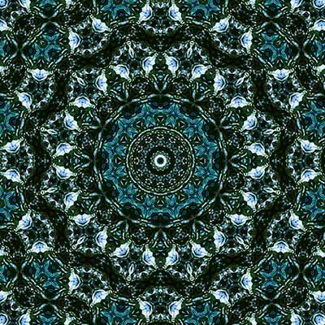 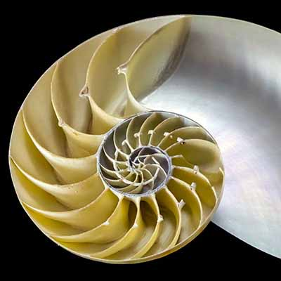 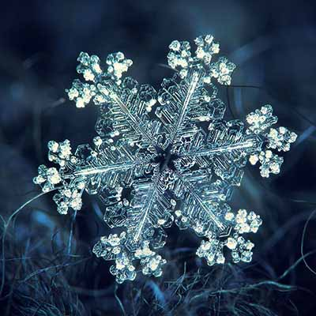 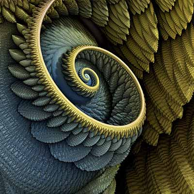 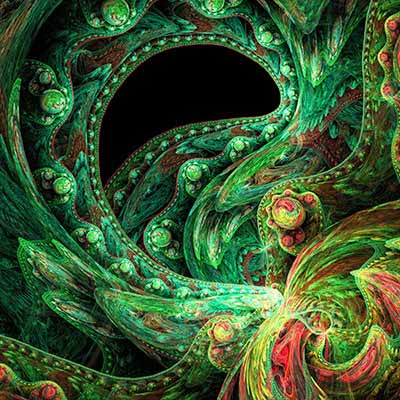
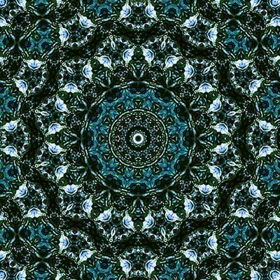 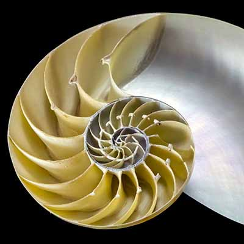 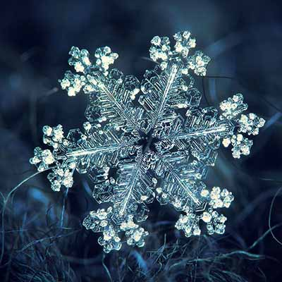 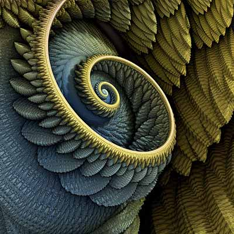 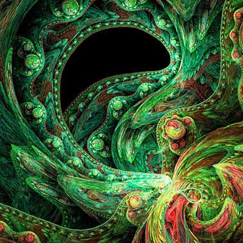  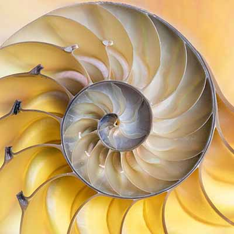 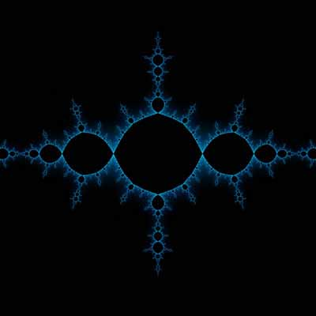 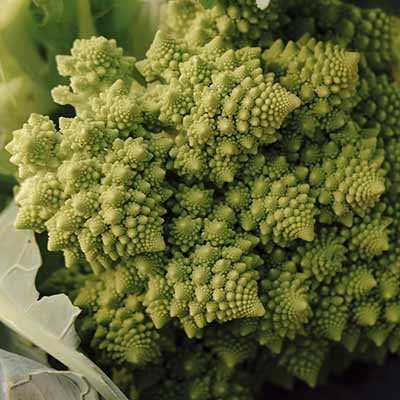 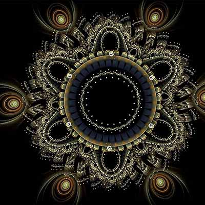 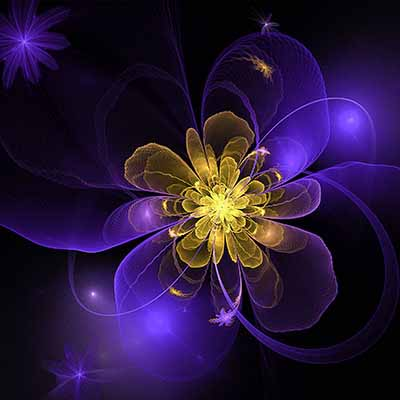 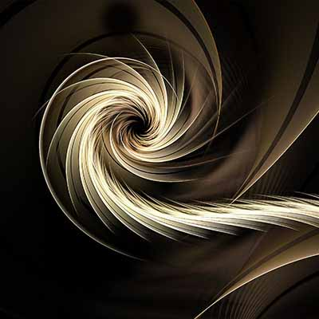 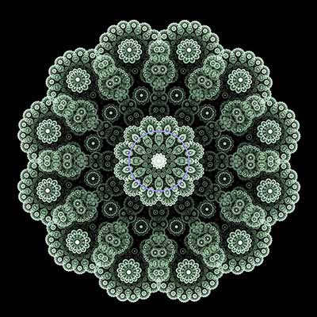 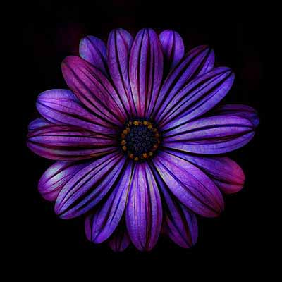 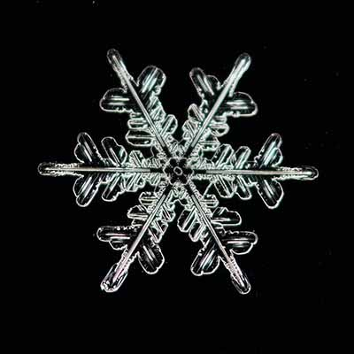
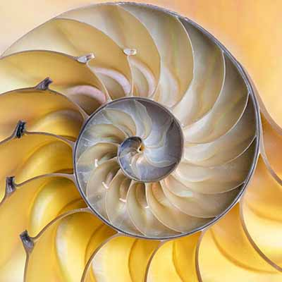 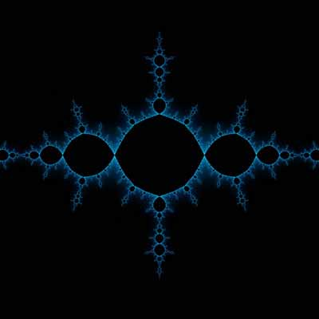 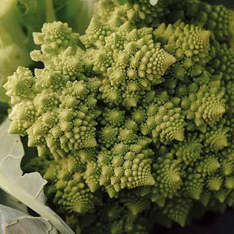 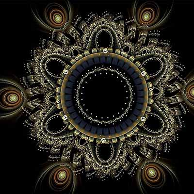 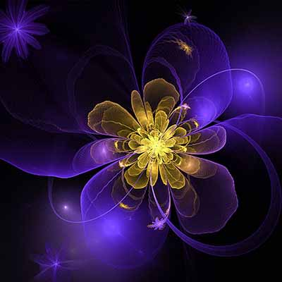 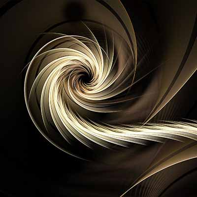 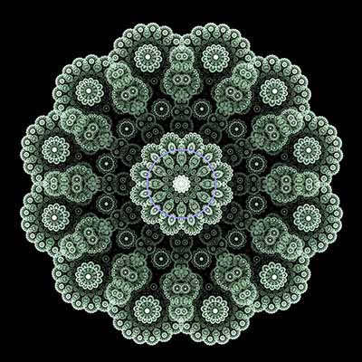 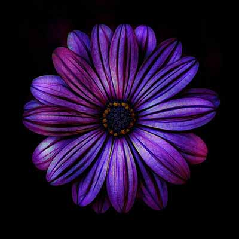 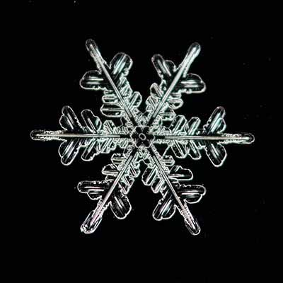kontakt

Projekt vznikl za účelem seznámení s fraktály jednoduchou a srozumitelnou formou. Uvítám jakékoli náměty nebo připomínky na toto téma. Odborné poznatky i obyčejné úvahy k zamyšlení.
Petr Zábranský
autor projektu